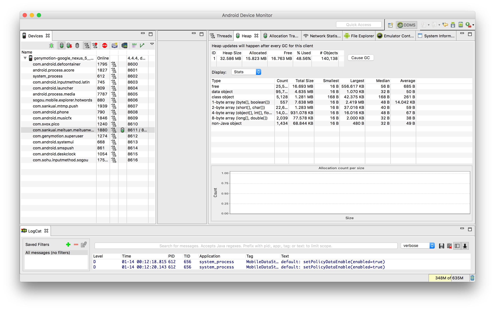
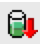
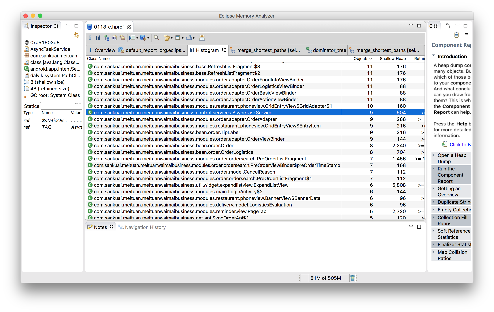
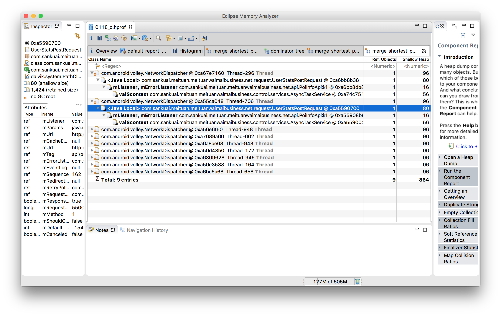
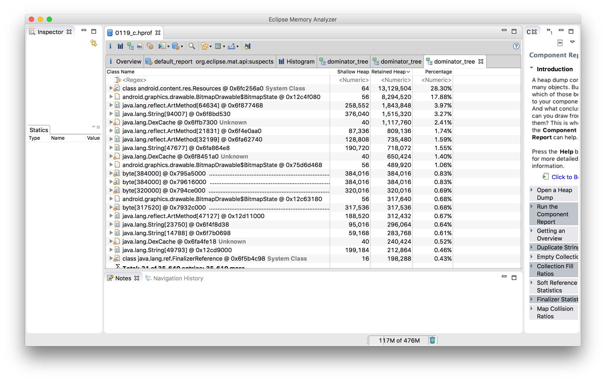
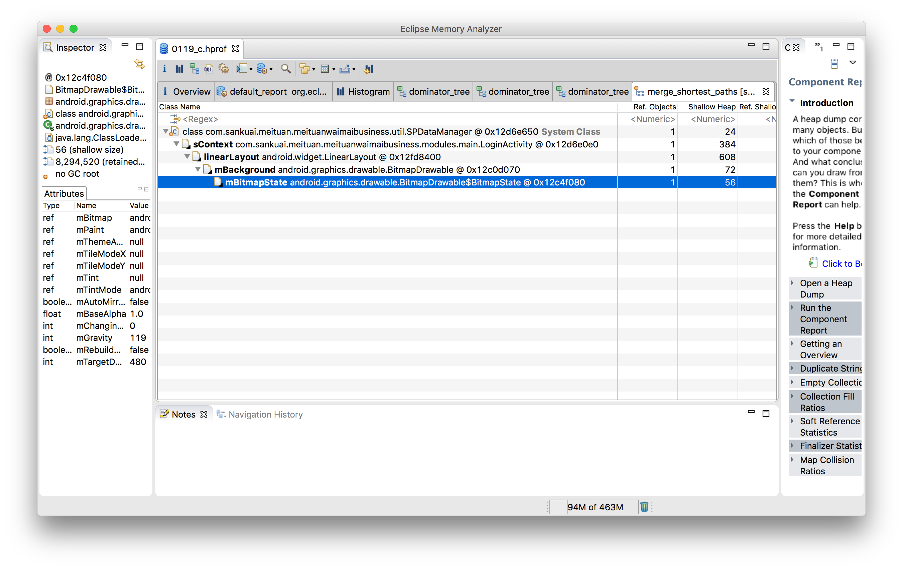

内存泄露的定义:
当某些对象不再被应用程序所使用,但是由于仍然被引用而导致垃圾收集器不能释放(Remove,移除)他们.
产生的原因：
内存对象明明已经不需要的时候，还仍然保留着这块内存和它的访问方式（引用）
长生命周期的对象持有短生命周期对象的引用就很可能发生内存泄露，尽管短生命周期对象已经不再需要，但是因为长生命周期对象持有它的引用而导致不能被回收，这就是java中内存泄露的发生场景。
常见的内存泄漏
非静态内部类的静态实例容易造成内存泄漏
public class MainActivityextends Activity {
static Demo sInstance = null;
@Override
public void onCreate(BundlesavedInstanceState) {
super.onCreate(savedInstanceState);
setContentView(R.layout.activity_main);
if (sInstance == null) {
sInstance= new Demo();
}
}
class Demo{
voiddoSomething() {
System.out.print("dosth.");
}
}
}
上面的代码中的sInstance实例类型为静态实例，在第一个MainActivity act1实例创建时，sInstance会获得并一直持有act1的引用。当MainAcitivity销毁后重建，因为sInstance持有act1的引用，所以act1是无法被GC回收的，进程中会存在2个MainActivity实例（act1和重建后的MainActivity实例），这个act1对象就是一个无用的但一直占用内存的对象，即无法回收的垃圾对象。所以，对于lauchMode不是singleInstance的Activity， 应该避免在activity里面实例化其非静态内部类的静态实例。
activity使用静态成员
private static Drawable sBackground;
@Override
protected void onCreate(Bundle state) {
super.onCreate(state);
TextView label = new TextView(this);
label.setText("Leaks are bad");
if (sBackground == null) {
sBackground = getDrawable(R.drawable.large_bitmap);
}
label.setBackgroundDrawable(sBackground);
setContentView(label);
}
由于用静态成员sBackground 缓存了drawable对象，所以activity加载速度会加快，但是这样做是错误的。因为在android 2.3系统上，它会导致activity销毁后无法被系统回收。
label .setBackgroundDrawable函数调用会将label赋值给sBackground的成员变量mCallback。
上面代码意味着：sBackground（GC Root）会持有TextView对象，而TextView持有Activity对象。所以导致Activity对象无法被系统回收。
下面看看android4.0为了避免上述问题所做的改进。
先看看android 2.3的Drawable.Java对setCallback的实现：
public final void setCallback(Callback cb){
mCallback = cb;
}
再看看android 4.0的Drawable.Java对setCallback的实现：
public final void setCallback(Callback cb){
mCallback = newWeakReference<Callback> (cb);
}
在android 2.3中要避免内存泄漏也是可以做到的, 在activity的onDestroy时调用
sBackgroundDrawable.setCallback(null)。
以上2个例子的内存泄漏都是因为Activity的引用的生命周期超越了activity对象的生命周期。也就是常说的Context泄漏，因为activity就是context。
想要避免context相关的内存泄漏，需要注意以下几点：
- 不要对activity的context长期引用(一个activity的引用的生存周期应该和activity的生命周期相同)
- 如果可以的话，尽量使用关于application的context来替代和activity相关的context
- 如果一个acitivity的非静态内部类的生命周期不受控制，那么避免使用它；正确的方法是使用一个静态的内部类，并且对它的外部类有一WeakReference，就像在ViewRootImpl中内部类W所做的那样。
使用handler时的内存问题
我们知道，Handler通过发送Message与其他线程交互，Message发出之后是存储在目标线程的MessageQueue中的，而有时候Message也不是马上就被处理的，可能会驻留比较久的时间。在Message类中存在一个成员变量 target，它强引用了handler实例，如果Message在Queue中一直存在，就会导致handler实例无法被回收，如果handler对应的类是非静态内部类 ，则会导致外部类实例（Activity或者Service）不会被回收，这就造成了外部类实例的泄露。 所以正确处理Handler等之类的内部类，应该将自己的Handler定义为静态内部类，并且在类中增加一个成员变量，用来弱引用外部类实例，如下：
public class OutterClass
{
......
......
static class InnerClass
{
private final WeakReference<OutterClass> mOutterClassInstance;
......
......
}
}
Android lint 会产生一个警告
This Handler class should be static or leaks might occur (com.example.ta.MainActivity.1)
Issue: Ensures that Handler classes do not hold on to a reference to an outer class
Id: HandlerLeak
In Android, Handler classes should be static or leaks might occur. Messages enqueued on the application thread’s MessageQueue also retain their target Handler. If the Handler is an inner class, its outer class will be retained as well. To avoid leaking the outer class, declare the Handler as a static nested class with a WeakReference to its outer class.
原因是：
当Android应用启动的时候，会先创建一个应用主线程的Looper对象，Looper实现了一个简单的消息队列，一个一个的处理里面的Message对象。主线程Looper对象在整个应用生命周期中存在。
当在主线程中初始化Handler时，该Handler和Looper的消息队列关联。发送到消息队列的Message会引用发送该消息的Handler对象，这样系统可以调用 Handler#handleMessage(Message) 来分发处理该消息。
在Java中，非静态(匿名)内部类会引用外部类对象。而静态内部类不会引用外部类对象。
如果外部类是Activity，则会引起Activity泄露 。
当Activity finish后，延时消息会继续存在主线程消息队列中1分钟，然后处理消息。而该消息引用了Activity的Handler对象，然后这个Handler又引用了这个Activity。这些引用对象会保持到该消息被处理完，这样就导致该Activity对象无法被回收，从而导致了上面说的 Activity泄露。
要修改该问题，只需要按照Lint提示的那样，把Handler类定义为静态即可，然后通过WeakReference 来保持外部的Activity对象。
注册某个对象后未反注册
集合中对象没清理造成的内存泄露
资源对象没关闭造成的内存泄露
比如 cursor 、file
GC 机制
如上图所示，GC会选择一些它了解还存活的对象作为内存遍历的根节点（GC Roots），比方说thread stack中的变量，JNI中的全局变量，zygote中的对象（class loader加载）等，然后开始对heap进行遍历。到最后，部分没有直接或者间接引用到GC Roots的就是需要回收的垃圾，会被GC回收掉。如下图蓝色部分

- Shallow heap表示对象本身所占内存大小，一个内存大小100bytes的对象Shallow heap就是100bytes。
- Retained heap表示通过回收这一个对象总共能回收的内存，比方说一个100bytes的对象还直接或者间接地持有了另外3个100bytes的对象引用，回收这个对象的时候如果另外3个对象没有其他引用也能被回收掉的时候，Retained heap就是400bytes。
内存管理分析
- 打开 DDMS ，选中需要分析的进程，然后点击update heap
- 在app 中操作后，点击 Cause GC,观察heap 的使用量 
- 点击  导出 HPROF 文件
- 转换 hprof 的格式，从而支持使用 MAT 工具打开分析
hprof-conv <source_file> <dest_file>- 使用 MAT 打开生成文件
- 点击 查看详情
MAT 使用
- 可以在上面过滤自己需要的类名，支持正则表达式
- 在某一项上右键打开菜单选择 list objects ->with incoming refs 将列出该类的实例：
快速找出某个实例没被释放的原因，可以右健 Path to GC Roots-->exclue all phantom/weak/soft etc
Shallow heap表示对象本身所占内存大小，一个内存大小100bytes的对象Shallow heap就是100bytes。
Retained heap表示通过回收这一个对象总共能回收的内存，比方说一个100bytes的对象还直接或者间接地持有了另外3个100bytes的对象引用，回收这个对象的时候如果另外3个对象没有其他引用也能被回收掉的时候，Retained heap就是400bytes。
分析实例
实例1
Mat中导入数据后，过滤包名，按照 obj 数量排序

发现 AsyncTaskService 有9个实例，不正常，右键 Path to GC Roots 查看

发现是 volley 中的 NetworkDispatcher 持有了 context 导致释放不了
NetworkDispatcher 持有（用到了） UserStatsPostRequest 持有 mLIstener、mErrorListener 持有 context
在 AsyncTaskService中 PoiInfoApi.refreshPoiInfo(AsyncTaskService.this, null);
传入的 context 是AsyncTaskService，导致 PoiInfo 与 AsyncTaskService的生命周期相关联
当 service生命周期结束时，mLIstener 仍然持有 Service ，导致 GC无法回收，当下次再次请求 Poiapi时，会再次用到一个新的AsyncTaskService
解决方法
传入的 context 不使用 activity 或Service这样和 Android 生命周期相关的，使用 appcation 中的 sContext
实例2
- 点击 ，按照堆排序

此时是按照占用的大小排序的，首先Retained Heap表示这个对象以及它所持有的其它引用（包括直接和间接）所占的总内存，因此从上图中看，前两行的Retained Heap是最大的，我们分析内存泄漏时，内存最大的对象也是最应该去怀疑的。
在每一行的最左边都有一个文件型的图标，这些图标有的左下角带有一个红色的点，有的则没有。带有红点的对象就表示是可以被GC Roots访问到的，根据上面的讲解，可以被GC Root访问到的对象都是无法被回收的
第一行为资源文件，比较大很正常，第二行为 bitmap，点击 -> Path to GC Roots -> exclude weak references，为什么选择exclude weak references呢？因为弱引用是不会阻止对象被垃圾回收器回收的，所以我们这里直接把它排除掉

黑体表示变量名，右侧正常体表示类名， 由上到下表示含有关系
可以看到 bitmap 之所以释放不掉是因为 linearLayout 无法释放，而linearLayout之所以释放不掉是因为 linearLayout 无法释放，是因为 LoginActivity 无法释放，....最终发现是 SPDataManager中 的 sContext 持有了 Activity，导致 Activity 无法被 GC回收
解决方法
在构造 SPDataManger 时，不使用 Activity 的 context ，而使用 getapplicationContext，避免与 Actvity 的生命周期关联
参考
http://blog.csdn.net/gemmem/article/details/13017999
http://blog.csdn.net/guolin_blog/article/details/4223863